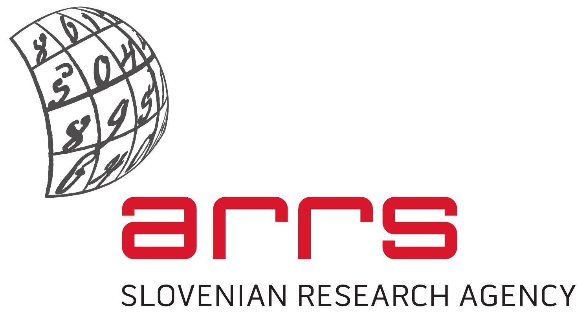

from 15th June 2023
to 18th June 2023
Plemljeva Villa
Bled, Slovenia
The focus of this workshop is the study of highly symmetric abstract polytopes, maps, maniplexes and related objects. The participants will form research groups to present, discuss and work on relevant open problems on the theory of highly symmetric polytopes. For more information, contact Antonio Montero: antonio dot montero at fmf dot uni-lj dot si.
University of Ljubljana,
Faculty of Mathemathics and Physics,
Institute of Mathematics, Physics, and Mechanics